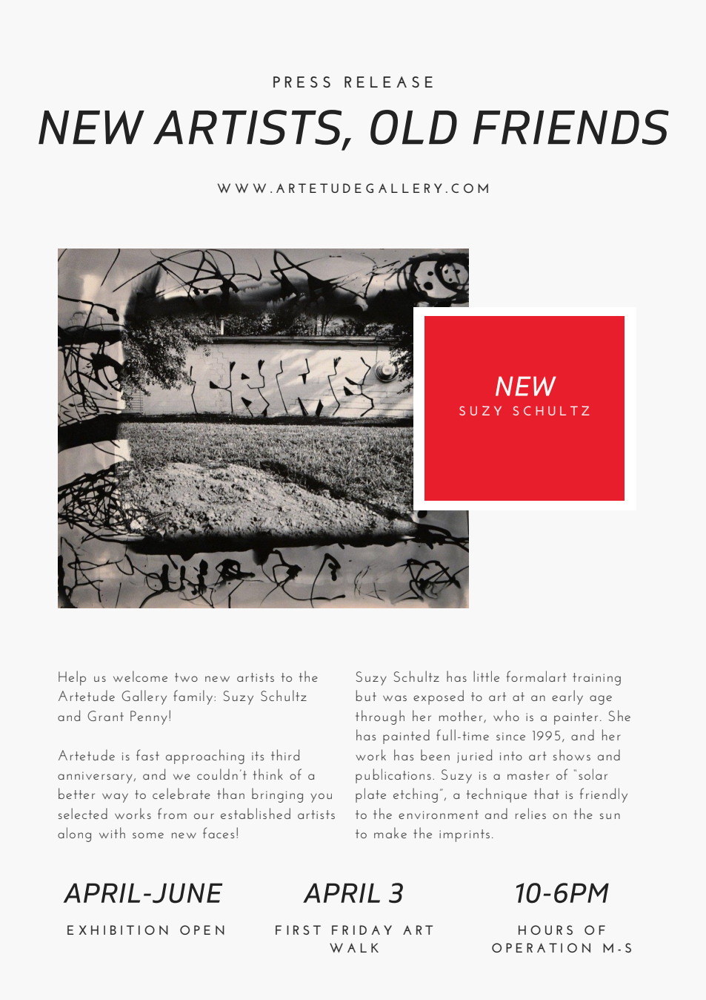
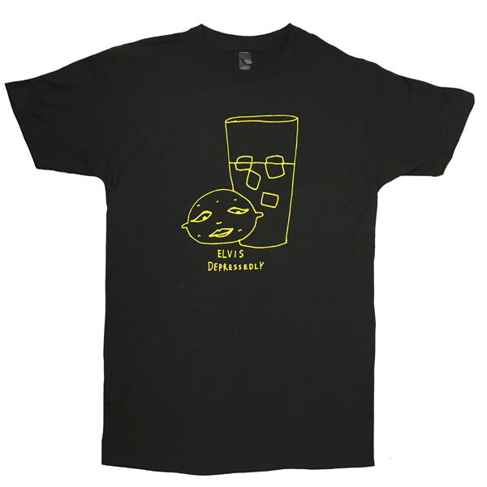
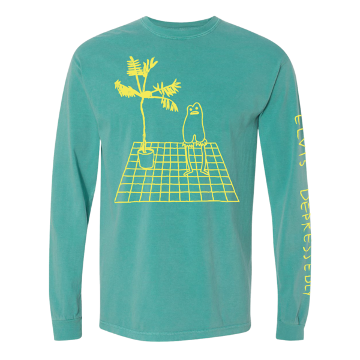
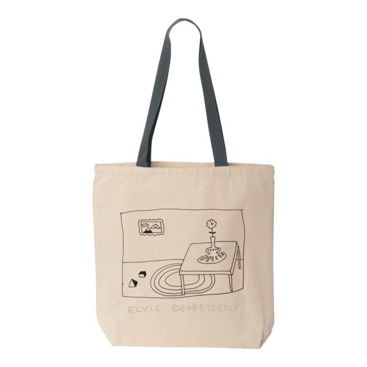

Writing, design + production
Artetude Gallery
As Gallery Manager, I handled day-to-day gallery operations and wrote exhibition communications and artist-focused material, including press releases and interview-based biographies. The surviving samples support my writing credit; their later export dates do not establish when the original work was written.
{kind=link}

Music and merchandise
Combined touring performance and band operations with merchandise design, promotion and travel coordination. Designed the archived apparel and accessories shown here; the represented products were produced for Elvis Depressedly.



MGLTH
Wrote, narrated and edited promotional video for MGLTH, including footage and music selection. This is a production credit, not a claim of ownership of every third-party clip or track.
Teaching and organizing
Developed and taught live audiovisual-synthesis material as a Fierce Flix instructor. Earlier work also includes WUSC radio, campaign management, volunteer coordination and community organizing.
NFT workshop · Revised edition, September 2026 (PDF) ↗
NFT workshop · Revised edition, September 2026 (PowerPoint) ↗